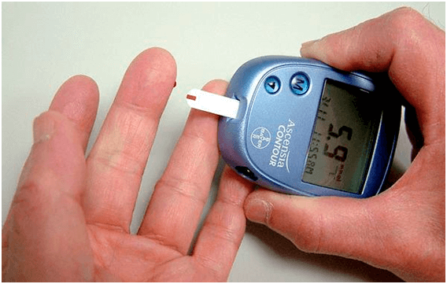

BUSINESS sulla MALATTIA:
Scoprirete tutto quello che vi hanno nascosti per lunghi anni
sul diabete
Categoria:Articoli utili per i diabetici

Ciao! Mi chiamo Lorenzo Pesce.
DI solito non scrivo recensioni, ma questa volta ho deciso di farlo per tutte le persone malate di diabete come me. Dato che per via degli errori dei medici ci ho quasi rimesso la vita.
Ho 35 anni, una moglie e due bambini. Faccio il cuoco in una mensa scolastica. Dieci anni fa mi hanno fatto la diagnosi: diabete di secondo tipo. Ero sempre stanco, non riuscivo a mangiare normalmente, nonostante mi impegnassi molto. Con il mio lavoro poi! In aggiunta è diventato necessario tenere sempre sotto controllo il livello di zucchero nel sangue .
Il mio giorno iniziava con la misurazione del livello di zucchero attraverso il dito. Perdevo migliaia di euro al mese in medicinali . Con uno stipendio come il mio! Una catastrofe! Mettici anche che ultimamente in Italia il coste delle pillole è andato sempre aumentando.

Ho dovuto vendere casa in campagna e macchina, prendere un prestito per pagare le cure e per comprare il necessario per misurare sempre il livello di zucchero… Stavo per finire nella tomba in questo modo. Avevo sempre la nausea e in un paio di mesi sono ingrassato notevolmente. Poi ho anche iniziato ad essere un problema anche per la mia famiglia Vivevo con la paura che anche i miei figli avrebbero avuto il diabete di secondo tipo.
Pensavo che non sarebbe potuta andare peggio, fino a che un evento non ha messo a rischio la mia vita.
Ho comprato delle scarpe nuove e indossandole ho iniziato ad avere le vesciche. Dopo qualche tempo si sono trasformate in cicatrici che non si chiudevano più. Non sentivo dolore ma era difficile camminare, mi bruciavano i piedi , quindi mi sono rivolto ad un dottore. Costui mi ha detto che c’era la grande possibilità di veder comparire una cancrena, il che avrebbe comportato la perdita della gamba!!!
Ho iniziato a sudare freddo. Sapevo che la cancrena non era una cosa poi così rara per i diabetici, ma non pensavo che avrei avuto a che fare con tale problema. Come avrei mai potuto vivere e lavorare senza una gamba!? Sono uscito dal dottore con il terrore di come sarebbe cambiata la mia vita e… con una lista di un altro centinaio di euro di medicine.
Quella stessa sera ne ho parlato su skype con un mio vecchio compagno di scuola che ora vive in America. Ha sentito la mia storia triste, i miei problemi di salute, la mia mancanza di soldi per le cure. Mi ha quindi raccontato che in America la situazione farmacologica per quanto riguarda medicinali è la stessa. I medici americani raccomandano di comprare medicinali costosi che non fanno che peggiorare la situazione. Infatti PIU’ PERSONE MALATE ci sono, PIU’ PILLOLE SERVIRANNO. E la vendita di medicinali fa guadagnare cifre enormi alle case farmaceutiche. Non penso che in Italia la situazione sia diversa, semplicemente non se ne parla.
Ho chiesto al mio amico in sostanza come curassero il diabete in America, e lui mi ha raccontato che ormai le persone si rifiutano di comprare i medicinali classici, preferiscono preparato naturali . La loro efficacia è nettamente migliore e non causano danni per l’organismo, a differenza delle pillole. Praticamente tutti i medicinali per il diabete in America sono sostituiti dal preparato speciale - «» . In Italia da noi non ne avevo mai neanche sentito parlare, quindi gli ho chiesto di mandarmi il link di questo preparato.
Ho scoperto così che "" è un prodotto organico sotto forma di polvere. Il componente principale è l’inulina, ottenuta dalla pianta Heliánthus tuberósus . E’ stata utilizzata per secoli nella medicina orientale per stabilizzare il livello di zucchero nel sangue. Dopo diversi studi la scienza contemporanea ha confermato l’efficacia di questo polisaccaride nella lotta contro il diabete di secondo tipo. E la cosa più importante è che la combinazione inulina e L-arginina aiuta a ripristinare le cellule del pancreas, che rilasciano l’insulina!
”” - è l’unico integratore che si basa su questo componente. In caso di diabete di secondo tipo elimina il glucosio dal sangue , abbassa o completamente elimina (nel più del 20% dei malati) la dipendenza da preparati che abbassano il livello di zucchero nel sangue , rinforza i vasi sanguigni e regola il metabolismo .
"" è raccomandato per l’utilizzo in aggiunta agli altri preparati già
in uso , anche se usato in via PREVENTIVA, se si ha paura che ci sia un rischio di aggravamento.
Ho deciso di provare””, tanto ormai non avevo più nulla da perdere e l’ho ordinato
sul sito del produttore.
Sostanzialmente lo bevevi la mattina con un bicchiere di acqua calda, ne scioglievo un cucchiaino nel bicchiere e lo bevevo caldo a piccoli sorsi. Ve lo dirò sinceramente, non credevo nei miracoli. E facevo male… Dopo una settimana mi sono accorto che mi stancavo di meno, e a poco a poco ho cominciato nuovamente a mangiare i miei cibi preferiti . Il livello di zucchero nel sangue è tornato nella norma (prima di assumere «» il livello di glucosio nel sangue a digiuno era 9,6 , dopo due settimane a stomaco pieno era 5,4 😊 e le ferite sui piedi sono guarite. E non vi ho detto del peso. Ho perso 4,5 kg!
Non potevo credere a questi risultati… Ecco a voi la soluzione per chi è malato di diabete di secondo tipo. Sono scomparsi dolori e disturbi, ho smesso di fare attenzione a cosa mangiavo . Niente più pensieri su iniezioni e operazioni. Non AVEVO PIU’ BISOGNO DI PRENDERE TUTTE QUELLE PILLOLE. Ho sconfitto il diabete senza l’aiuto di quelle imbroglione delle case farmaceutiche e senza i consigli dei cosiddetti «esperti».

Lo dico subito, “” è in vendita solo su internet, perché nessuno ha interesse che il prodotto venga messo in vendita sul libero mercato. Ricordatevi che le cause farmaceutiche non vi vedono come un paziente che si può curare ... VI vedono come un cliente a vita.
Mentre “” VI FA RISPARMIARE migliaia di euro, che altrimenti avreste regalato alle case farmaceutiche. Fate attenzione, in Italia è face imbattersi in falsi. Ordinate solo dal VERO ED UNICO distributore ufficiale italiano, che vi può garantire qualità.

Sperò che il mio racconto sarà utile a salvare più di una vita. Siate in salute!
Commenti:
A questi tipi col camice bianco andrebbe di aprirci tutti! Un dottore che conosco mi ha consigliato questo preparato in VIA PREVENTIVA. «» dicono sia attualmente il miglior preparato contro il diabete. Guardate, per quanto mi riguarda, il livello di glucosio a digiuno era 8.7, in un mese è diventato 5.9 A STOMACO PIENO! Continuo ad assumerlo.
Grazie per averlo scritto. Io e mio marito avevamo perso ogni speranza… Ho letto e l’ho ordinato da questo sito. In un paio di settimane ha controllato e da 7.9 il livello è diventato 4.8!!!
Anche io voglio scriverne, perché finchè non l’ho provato avevo paura anche io che fosse una fregatura. L’ho assunto per un mese. Prima di assumerlo il mio livello a stomaco vuoto era di 9,8, dopo un mese a stomaco pieno 5.9. Vivo in salute!
Salve, mi chiamo Teresa. Non soffro in prima persona di diabete. Mio padre invece è un diabetico di tipo da ben 15 anni. Ditemi, come posso combattere questo problema? Amo mio padre e spero viva tanti anni ancora, non saprei cosa fare se venisse a mancare…Consigliatemi come aiutarlo, sarò molto grato
Prova a dargli prima del cibo insieme alle sue medicine anche un bicchiere di acqua calda con « ». Così non dovrà smettere di prendere le sue medicine e vedrà calare subito il livello di zucchero!
Mio padre aveva un problema simile, però lui non usa l’insulina, prende solo le pillole. Su consiglio di mia madre si è messo a dieta ed ha iniziato ad assumere questo preparato, quando ha smesso di sentire le dita dei piedi…
Un preparato economico! Eravamo sommersi dai debiti, la cura di mio figlio era troppo costosa. A lavoro una collega mi ha consigliato di provare ad usare “”. Non ci avrei mai creduto, ma non avevo più alternative. Ora il mio amato figlio è in salute. Pensate, da 9,7 il livello è calato a 5.9!
Anche io avevo il diabete di secondo tipo, una cosa di famiglia. Mia sorella che è dottoressa mi ha mostrato un sito dove spiegavano perfettamente l’azione di “” e il suo effetto positivi. Abbiamo ordinato subito questo integratore, mi ha nuovamente donato una vita normale!
Mio fratello soffriva di diabete di secondo tipo. Ero disperata quindi l’ho ordinata. L’ultima speranza è stata quella buona! Il glucosio due ore dopo il cibo era 9,8, ora dopo una settimana di assunzione a stomaco vuoto è 5,3! Ecco il link, dove ho scaricato “”.
Sono un medico in una clinica privata. Mi hanno proposto di vendere medicine ai pazienti in cambio di una %, ma come si fa...Mia madre è stata malata di diabete di secondo tipo finché non ho trovato con prove ed errori una soluzione. Ecco i risultati: prima dell’assunzione di «» il glucosio a stomaco vuoto era 8.7. Dopo tre mesi di assunzione 5.9. Prima dell’assunzione il livello di glucosio nel sangue due ore dopo il cibo era 9.8, dopo due mesi di assunzione invece è diventato 5.2. Penso che tra poco si potranno eliminare completamente i medicinali.
I dottori sono tremendi, pensano solo a guadagnare!!!!! Come si fa a prescrivere cose così costose se ci sono analoghi economici!?
Dove eravate prima con questo articolo? Soffro di diabete… :(
Non vi disperate! A me «» aiuta. Provato in prima persona! Prendetelo semplicemente la mattina assieme a tutte le altre medicine e poi starete meglio
Come si assume il vostro “”?
Io lo aggiungevo ad un bicchiere di acqua calda, con un goccio di acqua fredda per renderla tiepida, ne basta un cucchiaino di “”, mischiavo e bevevo a stomaco vuoto. Elementare:)
Io lo bevevo al posto del te la mattina :)) Abbassa il livello di insulina. Tre settimane fa la mattina avevo 7, 6 , ora l’ho misurata ed è 5,2. Ecco qua))
Chi ha assunto “”, mi racconti, cosa contiene?
L’ho ordinato e gli ingredienti sono sulla scatola : fibregam, inulina, acido di limone, vitamine В6, В1. Penso che sia tutto salutare, niente di negativo.
Meno male che esiste questa alternativa! Non capisco che senso abbia comprare medicine costosi se ci sono alternative molto più economiche. Ora sto andando in pensione, non avrò soldi da spendere in farmacie, quindi ascolto certamente questi maledetti camici bianchi, ma penserò di testa mia a casa
Ho mostrato ad un dottore amico “”, ha letto gli ingredienti ed è rimasto stupito del fatto che un preparato del genere si possa acquistare in Italia! Dice che tutti i componenti sono molto efficaci per migliorare la situazione ed abbassare i valori necessari nel sangue. Per un diabetico basta da solo a sostituire praticamente ogni medicina.
Scriveteci per favore che risultati state avendo
L’ho assunto due settimane. Da 7.1 lo zucchero è sceso a 4,8. Devo assolutamente continuare!!!